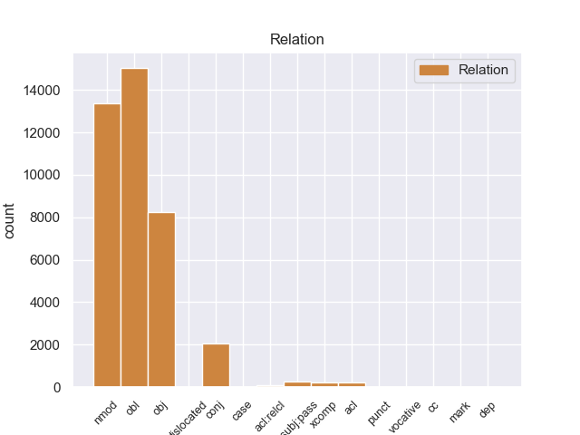
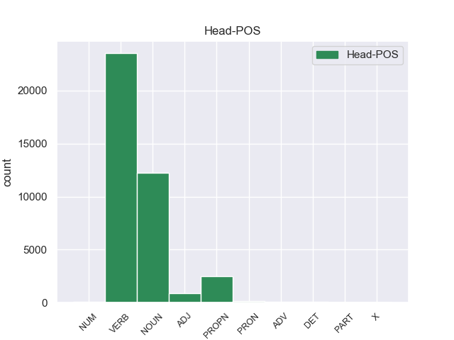
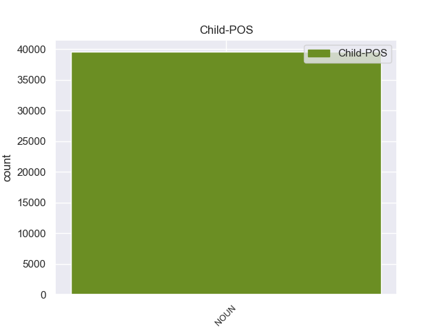

Distribution of features within this leaf



Morphosyntax Rules sorted by frequency.
- When the dependent token is the numeric modifier(nummod) of the head token, and the dependent token is NUM, the Number needs to be Plur.
1 इन _ _ _ _ 0 _ _ _
2 दोनों _ _ _ _ 0 _ _ _
3 देशों _ _ _ _ 0 _ _ _
4 के _ _ _ _ 0 _ _ _
5 बीच _ _ _ _ 0 _ _ _
6 रिश्ते _ _ _ _ 0 _ _ _
7 में _ _ _ _ 0 _ _ _
8 सुधार _ _ _ _ 0 _ _ _
9 से _ _ _ _ 0 _ _ _
10 करोड़ों करोड NUM QC Number=Plur|NumType=Card 11 nummod _ ChunkId=NP4|ChunkType=child|Translit=karoṛoṁ
11 लोगों लोग NOUN NN Case=Acc|Gender=Masc|Number=Plur|Person=3 0 _ _ _
12 का _ _ _ _ 0 _ _ _
13 भला _ _ _ _ 0 _ _ _
14 होगा _ _ _ _ 0 _ _ _
15 । _ _ _ _ 0 _ _ _
1 इन _ _ _ _ 0 _ _ _
2 परीक्षार्थियों _ _ _ _ 0 _ _ _
3 में _ _ _ _ 0 _ _ _
4 से _ _ _ _ 0 _ _ _
5 एक _ _ _ _ 0 _ _ _
6 लाख _ _ _ _ 0 _ _ _
7 ७२ _ _ _ _ 0 _ _ _
8 हजार _ _ _ _ 0 _ _ _
9 २२२ _ _ _ _ 0 _ _ _
10 सफल _ _ _ _ 0 _ _ _
11 हुए _ _ _ _ 0 _ _ _
12 और _ _ _ _ 0 _ _ _
13 १३०२७ १३०२७ NUM QC Case=Acc|Number=Plur|NumType=Card 15 nmod _ ChunkId=NP3|ChunkType=head|Translit=13027|Vib=0_का
14 की _ _ _ _ 0 _ _ _
15 कंपार्टमेंट कंपार्टमेंट NOUN NN Case=Nom|Gender=Fem|Number=Sing|Person=3 0 _ _ _
16 आई _ _ _ _ 0 _ _ _
17 । _ _ _ _ 0 _ _ _
1 उन्होंने _ _ _ _ 0 _ _ _
2 कहा _ _ _ _ 0 _ _ _
3 कि _ _ _ _ 0 _ _ _
4 कपास _ _ _ _ 0 _ _ _
5 उत्पादन _ _ _ _ 0 _ _ _
6 बढ़ाकर _ _ _ _ 0 _ _ _
7 भारत _ _ _ _ 0 _ _ _
8 दुनिया _ _ _ _ 0 _ _ _
9 के _ _ _ _ 0 _ _ _
10 कपड़ा _ _ _ _ 0 _ _ _
11 कारोबार _ _ _ _ 0 _ _ _
12 में _ _ _ _ 0 _ _ _
13 अपनी _ _ _ _ 0 _ _ _
14 हिस्सेदारी _ _ _ _ 0 _ _ _
15 12 12 NUM QC Case=Acc|Number=Plur|NumType=Card 17 obl _ ChunkId=NP8|ChunkType=head|Translit=12|Vib=0_से
16 से _ _ _ _ 0 _ _ _
17 बढ़ाकर बढा VERB VM VerbForm=Conv 0 _ _ _
18 25 _ _ _ _ 0 _ _ _
19 फीसदी _ _ _ _ 0 _ _ _
20 कर _ _ _ _ 0 _ _ _
21 सकता _ _ _ _ 0 _ _ _
22 है _ _ _ _ 0 _ _ _
23 । _ _ _ _ 0 _ _ _
1 इसमें _ _ _ _ 0 _ _ _
2 से _ _ _ _ 0 _ _ _
3 २० २० NUM QC Case=Acc|Number=Plur|NumType=Card 5 advmod _ ChunkId=NP2|ChunkType=head|Translit=20|Vib=0_से
4 से _ _ _ _ 0 _ _ _
5 ज्यादा ज्यादा DET QF PronType=Ind 0 _ _ _
6 लोग _ _ _ _ 0 _ _ _
7 मारे _ _ _ _ 0 _ _ _
8 जा _ _ _ _ 0 _ _ _
9 चुके _ _ _ _ 0 _ _ _
10 हैं _ _ _ _ 0 _ _ _
11 । _ _ _ _ 0 _ _ _
1 लेख _ _ _ _ 0 _ _ _
2 में _ _ _ _ 0 _ _ _
3 इस _ _ _ _ 0 _ _ _
4 बात _ _ _ _ 0 _ _ _
5 को _ _ _ _ 0 _ _ _
6 रेखांकित _ _ _ _ 0 _ _ _
7 किया _ _ _ _ 0 _ _ _
8 गया _ _ _ _ 0 _ _ _
9 है _ _ _ _ 0 _ _ _
10 कि _ _ _ _ 0 _ _ _
11 जॉन _ _ _ _ 0 _ _ _
12 पॉल _ _ _ _ 0 _ _ _
13 ने _ _ _ _ 0 _ _ _
14 १२० _ _ _ _ 0 _ _ _
15 कॉर्डिनल्स _ _ _ _ 0 _ _ _
16 में _ _ _ _ 0 _ _ _
17 से _ _ _ _ 0 _ _ _
18 ११५ ११५ NUM QC Case=Acc|Number=Plur|NumType=Card 22 obj _ ChunkId=NP5|ChunkType=head|Translit=115|Vib=0_को
19 को _ _ _ _ 0 _ _ _
20 खुद _ _ _ _ 0 _ _ _
21 नियुक्त _ _ _ _ 0 _ _ _
22 किया कर VERB VM Aspect=Perf|Gender=Masc|Number=Sing|Person=3|VerbForm=Part|Voice=Act 0 _ _ _
23 है _ _ _ _ 0 _ _ _
24 जिन्हें _ _ _ _ 0 _ _ _
25 अगले _ _ _ _ 0 _ _ _
26 पोप _ _ _ _ 0 _ _ _
27 का _ _ _ _ 0 _ _ _
28 चयन _ _ _ _ 0 _ _ _
29 करना _ _ _ _ 0 _ _ _
30 है _ _ _ _ 0 _ _ _
31 । _ _ _ _ 0 _ _ _
1 लाख _ _ _ _ 0 _ _ _
2 प्रयासों प्रयास NOUN NN Case=Acc|Gender=Masc|Number=Plur|Person=3 0 _ _ _
3 और _ _ _ _ 0 _ _ _
4 अरबों अरब NUM QC Number=Plur|NumType=Card 2 conj _ ChunkId=NP2|ChunkType=head|Translit=araboṁ
5 खर्च _ _ _ _ 0 _ _ _
6 करने _ _ _ _ 0 _ _ _
7 के _ _ _ _ 0 _ _ _
8 बावजूद _ _ _ _ 0 _ _ _
9 उत्तर _ _ _ _ 0 _ _ _
10 प्रदेश _ _ _ _ 0 _ _ _
11 में _ _ _ _ 0 _ _ _
12 पोलियो _ _ _ _ 0 _ _ _
13 का _ _ _ _ 0 _ _ _
14 कहर _ _ _ _ 0 _ _ _
15 थम _ _ _ _ 0 _ _ _
16 नहीं _ _ _ _ 0 _ _ _
17 रहा _ _ _ _ 0 _ _ _
18 है _ _ _ _ 0 _ _ _
19 । _ _ _ _ 0 _ _ _
1 यहां _ _ _ _ 0 _ _ _
2 कुल _ _ _ _ 0 _ _ _
3 13 _ _ _ _ 0 _ _ _
4 निर्दलीयों _ _ _ _ 0 _ _ _
5 में _ _ _ _ 0 _ _ _
6 से _ _ _ _ 0 _ _ _
7 11 11 NUM QC Case=Acc|Number=Plur|NumType=Card 12 nsubj _ ChunkId=NP3|ChunkType=head|Translit=11|Vib=0_ने
8 ने _ _ _ _ 0 _ _ _
9 उन्हें _ _ _ _ 0 _ _ _
10 अपना _ _ _ _ 0 _ _ _
11 समर्थन _ _ _ _ 0 _ _ _
12 दिया दे VERB VM Aspect=Perf|Gender=Masc|Number=Sing|VerbForm=Part|Voice=Act 0 _ _ _
13 । _ _ _ _ 0 _ _ _
1 उन्होंने _ _ _ _ 0 _ _ _
2 कहा _ _ _ _ 0 _ _ _
3 कि _ _ _ _ 0 _ _ _
4 ३० _ _ _ _ 0 _ _ _
5 अप्रैल _ _ _ _ 0 _ _ _
6 तक _ _ _ _ 0 _ _ _
7 पार्टी _ _ _ _ 0 _ _ _
8 को _ _ _ _ 0 _ _ _
9 झंडा _ _ _ _ 0 _ _ _
10 और _ _ _ _ 0 _ _ _
11 चुनाव _ _ _ _ 0 _ _ _
12 चिह्न _ _ _ _ 0 _ _ _
13 दोनों दो NUM QC Number=Plur|NumType=Card 14 xcomp _ ChunkId=NP6|ChunkType=head|Translit=donoṁ
14 मिल मिल VERB VM Number=Plur|Person=3|Voice=Act 0 _ _ _
15 जाएगें _ _ _ _ 0 _ _ _
16 । _ _ _ _ 0 _ _ _
non-conforming Examples:
1 यहाँ _ _ _ _ 0 _ _ _
2 फॉरेस्ट _ _ _ _ 0 _ _ _
3 के _ _ _ _ 0 _ _ _
4 होटल _ _ _ _ 0 _ _ _
5 में _ _ _ _ 0 _ _ _
6 दो दो NUM QC Case=Acc|Number=Sing|NumType=Card 17 nmod _ ChunkId=NP4|ChunkType=head|Translit=do|Vib=0_से
7 से _ _ _ _ 0 _ _ _
8 तीन _ _ _ _ 0 _ _ _
9 हजार _ _ _ _ 0 _ _ _
10 रुपए _ _ _ _ 0 _ _ _
11 में _ _ _ _ 0 _ _ _
12 बढ़िया _ _ _ _ 0 _ _ _
13 एयरकूल्ड _ _ _ _ 0 _ _ _
14 और _ _ _ _ 0 _ _ _
15 एसी _ _ _ _ 0 _ _ _
16 रूम _ _ _ _ 0 _ _ _
17 उपलब्ध उपलब्ध ADJ JJ _ 0 _ _ _
18 हैं _ _ _ _ 0 _ _ _
19 . _ _ _ _ 0 _ _ _
1 उन्होंने _ _ _ _ 0 _ _ _
2 बताया _ _ _ _ 0 _ _ _
3 कि _ _ _ _ 0 _ _ _
4 बुधवार _ _ _ _ 0 _ _ _
5 से _ _ _ _ 0 _ _ _
6 दर्ज _ _ _ _ 0 _ _ _
7 किए _ _ _ _ 0 _ _ _
8 गए _ _ _ _ 0 _ _ _
9 भूकंप _ _ _ _ 0 _ _ _
10 के _ _ _ _ 0 _ _ _
11 झटकों _ _ _ _ 0 _ _ _
12 की _ _ _ _ 0 _ _ _
13 तीव्रता _ _ _ _ 0 _ _ _
14 रेक्टर _ _ _ _ 0 _ _ _
15 पैमाने _ _ _ _ 0 _ _ _
16 पर _ _ _ _ 0 _ _ _
17 ४.११ ४.१ NUM QC Case=Acc|Number=Sing|NumType=Card 20 nmod _ ChunkId=NP7|ChunkType=head|Translit=4.11|Vib=0_से_लेकर
18 से _ _ _ _ 0 _ _ _
19 लेकर _ _ _ _ 0 _ _ _
20 ५.५ ५.५ NUM QC Case=Acc|NumType=Card 0 _ _ _
21 तक _ _ _ _ 0 _ _ _
22 आँकी _ _ _ _ 0 _ _ _
23 गई _ _ _ _ 0 _ _ _
24 है _ _ _ _ 0 _ _ _
25 . _ _ _ _ 0 _ _ _
1 मुख्यमंत्री _ _ _ _ 0 _ _ _
2 मुलायम _ _ _ _ 0 _ _ _
3 सिंह _ _ _ _ 0 _ _ _
4 यादव _ _ _ _ 0 _ _ _
5 के _ _ _ _ 0 _ _ _
6 इस्तीफा _ _ _ _ 0 _ _ _
7 देने _ _ _ _ 0 _ _ _
8 से _ _ _ _ 0 _ _ _
9 खाली _ _ _ _ 0 _ _ _
10 हुए _ _ _ _ 0 _ _ _
11 मैनपुरी _ _ _ _ 0 _ _ _
12 लोकसभा _ _ _ _ 0 _ _ _
13 क्षेत्र _ _ _ _ 0 _ _ _
14 में _ _ _ _ 0 _ _ _
15 सुबह _ _ _ _ 0 _ _ _
16 लगभग _ _ _ _ 0 _ _ _
17 पौने पौना NUM QCC Case=Nom|Gender=Masc|Number=Sing|NumType=Card 18 dep _ ChunkId=NP5|ChunkType=child|Translit=paune
18 नौ नौ NUM QC NumType=Card 0 _ _ _
19 बजे _ _ _ _ 0 _ _ _
20 गुटीय _ _ _ _ 0 _ _ _
21 संघर्ष _ _ _ _ 0 _ _ _
22 में _ _ _ _ 0 _ _ _
23 दो _ _ _ _ 0 _ _ _
24 लोग _ _ _ _ 0 _ _ _
25 मारे _ _ _ _ 0 _ _ _
26 गए _ _ _ _ 0 _ _ _
27 । _ _ _ _ 0 _ _ _
1 अमेरिका _ _ _ _ 0 _ _ _
2 जैसे _ _ _ _ 0 _ _ _
3 देश _ _ _ _ 0 _ _ _
4 में _ _ _ _ 0 _ _ _
5 तो _ _ _ _ 0 _ _ _
6 एक _ _ _ _ 0 _ _ _
7 प्रांत _ _ _ _ 0 _ _ _
8 का _ _ _ _ 0 _ _ _
9 रजिस्ट्रेशन _ _ _ _ 0 _ _ _
10 दूसरे दूसरा NUM QC Case=Acc|Gender=Masc|Number=Sing|NumType=Card 11 nummod _ ChunkId=NP5|ChunkType=child|Translit=dūsare
11 राज्य राज्य NOUN NN Case=Acc|Gender=Masc|Number=Sing|Person=3 0 _ _ _
12 में _ _ _ _ 0 _ _ _
13 मान्य _ _ _ _ 0 _ _ _
14 नहीं _ _ _ _ 0 _ _ _
15 होता _ _ _ _ 0 _ _ _
16 है _ _ _ _ 0 _ _ _
17 । _ _ _ _ 0 _ _ _
1 जाहिरा _ _ _ _ 0 _ _ _
2 अदालत _ _ _ _ 0 _ _ _
3 में _ _ _ _ 0 _ _ _
4 करीब _ _ _ _ 0 _ _ _
5 पौन पौन NUM QC Gender=Masc|Number=Sing|NumType=Card|Person=3 6 nummod _ ChunkId=NP3|ChunkType=child|Translit=pauna
6 घंटे घंटा NOUN NN Case=Nom|Gender=Masc|Number=Sing|Person=3 0 _ _ _
7 रही _ _ _ _ 0 _ _ _
8 और _ _ _ _ 0 _ _ _
9 अधिकांश _ _ _ _ 0 _ _ _
10 समय _ _ _ _ 0 _ _ _
11 उसे _ _ _ _ 0 _ _ _
12 आंसू _ _ _ _ 0 _ _ _
13 पोछते _ _ _ _ 0 _ _ _
14 देखा _ _ _ _ 0 _ _ _
15 गया _ _ _ _ 0 _ _ _
16 । _ _ _ _ 0 _ _ _